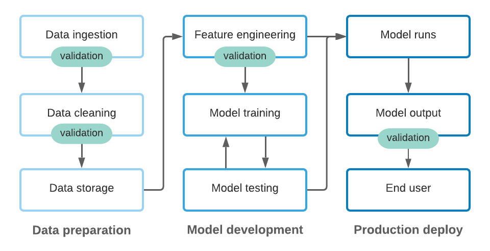

classDiagram
class DataOps {
- Data ingestion, where data is collected from various sources;
- Data processing, where raw data is cleaned and transformed;
- Data validation, which enforces quality standards;
- Data versioning & lineage, which provide traceability; and reproducibility.
}
3 The Role of DataOps
Reading Time: 40-55 minutes
DataOps, short for Data Operations, is a collaborative and agile approach to designing, implementing, and managing data workflows. It is an essential pillar within the MLOps lifecycle, ensuring that data — the lifeblood of any machine learning system — is efficiently, reliably, and securely delivered to support model training and inference. While MLOps focuses on the end-to-end process of deploying and maintaining machine learning systems, DataOps hones in on the data-specific aspects, addressing the challenges of data management, processing, and quality control. By embedding DataOps practices into the MLOps framework, organizations can build scalable, reliable ML systems that deliver consistent and meaningful results.
The primary goals of DataOps are to ensure that data pipelines are efficient, reliable, and produce high-quality data for machine learning workflows. These goals are achieved through robust processes for:
Together, these core components form the backbone of DataOps, enabling teams to handle growing data volumes, ensure compliance with regulations, and adapt to evolving business needs. By establishing a strong DataOps foundation, organizations can mitigate risks like data inconsistencies, inefficiencies, and errors, ultimately paving the way for successful ML systems.
This chapter will discuss each of these core components and then the next chapter will start giving you the tools and patterns used to implement these components.
3.1 Data Ingestion
Data ingestion involves gathering and importing data from multiple sources into a system for storage, processing, and use in machine ML workflows. The nature of the data sources, their structure, and the method of ingestion play a significant role in determining the efficiency and reliability of the ML system. In this section, we will explore the fundamental differences between data sources, when to use them, and their advantages and disadvantages. We will also compare batch and streaming ingestion methods and their suitability for different scenarios.
Understanding Data Sources
Data sources provide the foundation for machine learning (ML) workflows, and the choice of data source significantly impacts the design and effectiveness of the ML system. Each type of data source has unique characteristics, use cases, advantages, and limitations. Understanding these aspects is essential for building an efficient and scalable data ingestion pipeline.
Databases
Databases are structured systems designed to store, manage, and retrieve data efficiently. They are commonly used for transactional data, such as customer records, sales transactions, or financial ledgers.
When to Use: Databases are ideal when data is frequently updated, needs to be queried precisely, or must maintain high consistency. For example, an e-commerce application may use a relational database to track user purchases and manage inventory levels. NoSQL databases are better suited for dynamic or semi-structured data, such as user-generated content or real-time event logs.
Advantages:
- Relational Databases (e.g., MySQL, PostgreSQL): Ensure data integrity through schema enforcement and strong consistency models.
- NoSQL Databases (e.g., MongoDB, DynamoDB): Offer flexibility for semi-structured or unstructured data and scale horizontally to handle growing data volumes.
Disadvantages:
- Relational databases can struggle with scalability in high-throughput applications.
- NoSQL databases may not provide strong transactional guarantees, which could be problematic for certain use cases.
APIs
APIs (Application Programming Interfaces) enable programmatic access to data from external systems or services. They are often used to fetch dynamic data, such as weather updates, financial market data, or social media interactions.
When to Use: APIs are most useful when the data is maintained externally and needs to be accessed on-demand. For example, a stock-trading platform might fetch real-time price updates through a financial market API.
Advantages:
- Provide a standardized way to access external data.
- Allow flexible querying of specific fields or data ranges.
- Enable real-time or near-real-time access to dynamic data.
Disadvantages:
- API access can be rate-limited, introducing potential delays in data collection.
- Dependence on external systems may lead to availability or latency issues if the API provider experiences downtime.
- Often requires robust error handling and retries to ensure reliability.
Data Lakes
Data lakes serve as centralized repositories for storing large volumes of raw, unstructured, and semi-structured data. They are designed to handle diverse datasets, such as logs, multimedia files, and IoT sensor readings.
When to Use: Data lakes are ideal for big data, where the organization needs to store vast amounts of heterogeneous data for future exploration or processing. For instance, a media company might use a data lake to aggregate clickstream logs, user profiles, and video content metadata.
Advantages:
- Enable storage of massive datasets at a low cost.
- Provide flexibility for processing data in various ways, such as using batch or streaming pipelines.
- Allow analysts and data scientists to explore raw data without predefined schemas.
Disadvantages:
- Lack of enforced schema can lead to inconsistent data organization, often referred to as a “data swamp.”
- Slower access times compared to structured systems, especially for specific queries.
- Require strong governance and metadata management to maintain data discoverability and usability.
Real-Time Data Streams
Real-time data streams consist of continuous flows of data generated by sources like IoT devices, user interactions, or event-driven systems. They are commonly used for applications requiring immediate insights, such as fraud detection, predictive maintenance, or live recommendation engines.
When to Use: Real-time streams are essential when time sensitivity is critical. For example, an autonomous vehicle must process sensor data streams in real-time to make split-second decisions.
Advantages:
- Provide up-to-date information for time-sensitive applications.
- Support dynamic updating of ML models and dashboards in near real-time.
- Enable responsiveness to events as they occur, improving decision-making agility.
Disadvantages:
- Require significant infrastructure to support continuous ingestion and processing.
- Can be complex to implement and maintain, especially for low-latency systems.
- Higher resource costs compared to batch processing due to the always-on nature of real-time systems.
Selecting the right data source depends on the specific requirements of the ML system and its intended use case. For instance:
- Use databases when precise, structured data is needed for queries and frequent updates are expected.
- Leverage APIs when data resides in external systems and must be fetched dynamically or on demand.
- Opt for data lakes when dealing with vast amounts of heterogeneous data that may be analyzed in diverse ways over time.
- Implement real-time data streams when time-sensitive insights or rapid responses are required.
By understanding the fundamental differences and trade-offs between data sources, ML teams can design data ingestion pipelines tailored to their needs, ensuring efficient, reliable, and scalable workflows.
You don’t always have a choice!
While choosing the ideal data source is important, you don’t always have a choice. In many cases, the data source is determined by external constraints—such as an organization’s existing infrastructure, third-party providers, or legacy systems. For example, if a company’s customer data is only available through a legacy database, you must work with that database, regardless of its limitations. Similarly, when pulling weather or stock market data, you may be limited to an API provided by the service provider, even if it introduces latency or rate limits. A critical part of data ingestion is recognizing these constraints early and designing the pipeline to work efficiently with the available data source.
Batch vs. Streaming Ingestion
In the previous section, we discussed the idea of real-time data streams. Let’s discuss this a little more. The method of data ingestion — batch or streaming — determines how data flows into the ML system. Each method has distinct characteristics suited to specific needs.
Batch ingestion collects data in chunks or intervals, such as daily, weekly, monthly, etc. This method is ideal for scenarios where real-time data is not critical, and the focus is on processing large volumes of data efficiently. For example, an e-commerce company may use batch ingestion to aggregate and analyze customer orders from the previous day. The simplicity of batch ingestion makes it easier to implement, and it is more cost-effective since it requires fewer continuous resources. However, its periodic nature introduces latency, which may be unacceptable in time-sensitive applications.
flowchart LR
subgraph Monday
direction TB
ob1(observation) --> id1[(Data source)]
ob2(observation) --> id1
ob3(observation) --> id1
end
subgraph Tuesday
direction TB
ob4(observation) --> id2[(Data source)]
ob5(observation) --> id2
ob6(observation) --> id2
end
subgraph Wednesday
direction TB
ob7(observation) --> id3[(Data source)]
ob8(observation) --> id3
ob9(observation) --> id3
end
processing[Batch data processing]
downstream[Downstream ML system processes]
Monday --> processing
Tuesday --> processing
Wednesday --> processing
processing --> downstream
Streaming ingestion, by contrast, involves the continuous collection of data as it becomes available. This method is essential for use cases requiring real-time insights, such as fraud detection systems or live recommendation engines. Streaming allows systems to react immediately to new data, providing up-to-date results. However, this approach introduces higher complexity and infrastructure costs, as systems must be designed for low-latency processing and scalability. For instance, a financial institution detecting fraudulent transactions in real-time must ingest and process data streams from payment systems within milliseconds.
flowchart LR
ob1(observation) --> processing[Real-time data processing]
ob2(observation) --> processing
ob3(observation) --> processing
ob4(observation) --> processing
ob5(observation) --> processing
processing --> downstream[Downstream ML system processes]
processing --> id3[(Database)]
In practice, organizations often adopt a hybrid approach, using batch ingestion for historical data and streaming ingestion for real-time updates. For example, a retail company may analyze historical sales trends using batch data while simultaneously processing live customer behavior data through streams. This strategy leverages the strengths of both methods, ensuring comprehensive and timely insights for ML systems.
Examples
Below are three scenarios describing machine learning systems that utilize different types of data sources and require varying ingestion methods. For each scenario:
- Identify the data source(s) (e.g., database, API, real-time stream, data lake) that are being used, or that you believe should be used.
- Determine whether the ingestion process should be batch, streaming, or a hybrid approach.
- Justify your choice of ingestion method by considering the system’s requirements for latency, data volume, and frequency of updates.
Scenarios
Scenario 1: Predictive Maintenance for Industrial Machines
A manufacturing company is building an ML system to predict when machines on the production line will require maintenance to avoid unplanned downtime. The system collects data from IoT sensors installed on the machines. These sensors continuously send information such as temperature, vibration levels, and pressure readings. The ML system needs to analyze this incoming data in real time to provide timely predictions and alerts for potential breakdowns.
Scenario 2: Customer Segmentation for a Retail Business
A retail company wants to build an ML system to segment customers based on their purchase history, demographic data, and online behavior. The data comes from two sources: a relational database that stores historical transaction data and an API that provides weekly updates on recent marketing campaign responses. The system generates segmentation insights monthly for marketing teams to design personalized campaigns.
Scenario 3: Fraud Detection for Financial Transactions
A bank is developing an ML system to detect fraudulent transactions. The system receives data from real-time transaction streams as customers make payments using credit cards. The ML model must analyze each transaction immediately to flag suspicious activity and trigger appropriate alerts. Historical data stored in a data lake is also used periodically to retrain the fraud detection model.
3.2 Data Processing
Data processing is a cornerstone of machine learning workflows, transforming raw, messy, or unstructured data into a clean, structured, and feature-rich format that models can effectively use. The quality and reliability of this step directly impact the performance of the machine learning system, making it one of the most critical stages in the pipeline.
”Poor data quality is Enemy #1 to the widespread, profitable use of machine learning, and for this reason, the growth of machine learning increases the importance of data cleansing and preparation. The quality demands of machine learning are steep, and bad data can backfire twice – first when training predictive models and second in the new data used by that model to inform future decisions.”1
In practice, data processing involves several interrelated tasks. First, data sampling ensures that the volume of data being processed is manageable while maintaining representativeness. Next, data quality issues—such as missing values, inconsistencies, and outliers—are addressed through cleaning to ensure that the data is accurate and usable. Feature engineering comes next, where meaningful features are crafted from the raw data to capture relevant patterns and insights for the model. Finally, data leakage, a subtle yet potentially devastating issue, must be carefully avoided to ensure the integrity and generalizability of the model.
This section will explore these topics in detail, emphasizing their role in building reliable and scalable ML systems. By the end, you will understand the importance of thoughtful data processing and its role in creating robust machine learning pipelines.
Data Sampling
Data sampling is a crucial step in the data processing pipeline, particularly when working with large datasets. In many real-world scenarios, it can be infeasible or inefficient to process all available data due to computational constraints, resource limitations, or time considerations. Sampling allows data practitioners to work with a manageable subset of the data that accurately represents the overall population, ensuring efficient processing without compromising model performance or insights.
Why Sampling is Necessary
Modern machine learning systems often have access to massive datasets, ranging from millions of customer transactions to terabytes of sensor data from IoT devices. While having more data is generally beneficial, processing all of it can be resource-intensive and unnecessary, especially during exploratory data analysis or initial model development. Sampling enables practitioners to:
- Reduce computational load, making processing faster and less expensive.
- Test and prototype pipelines or algorithms on smaller, representative datasets.
- Avoid introducing bias or errors due to overfitting large, redundant data.
For example, an organization analyzing customer purchase behavior across millions of transactions might sample a subset of data to identify initial trends or test new features before scaling up to the entire dataset.
Types of Sampling
Two primary sampling methods are commonly used in data processing: nonprobability sampling and probability sampling. Each has specific use cases, advantages, and limitations.
Nonprobability Sampling
Nonprobability sampling involves selecting data points based on specific criteria or convenience rather than assigning each data point a known chance of inclusion. This method is often used when quick insights or targeted analysis is needed, even if the results may not generalize to the entire population. Some examples include:
- Convenience sampling: Samples of data are selected based on their availability. This sampling method is popular because, well, it’s convenient.
- Snowball sampling: Future samples are selected based on existing samples. For example, to scrape legitimate Twitter accounts without having access to Twitter databases, you start with a small number of accounts, then you scrape all the accounts they follow, and so on.
- Judgment sampling: Experts decide what samples to include.
- Quota sampling: You select samples based on quotas for certain slices of data without any randomization. For example, when doing a survey, you might want 100 responses from each of the age groups: under 30 years old, between 30 and 60 years old, and above 60 years old, regardless of the actual age distribution.
The samples selected by nonprobability criteria are not representative of the real-world data and therefore are riddled with selection biases.(Heckman 2013) Because of these biases, you might think that it’s a bad idea to select data to train ML models using this family of sampling methods. You’re right. Unfortunately, in many cases, the selection of data for ML models is still driven by convenience.
One example of these cases is language modeling. Language models are often trained not with data that is representative of all possible texts but with data that can be easily collected—Wikipedia, Common Crawl, Reddit.
Another example is data for training self-driving cars. Initially, data collected for self-driving cars came largely from two areas: Phoenix, Arizona (because of its lax regulations), and the Bay Area in California (because many companies that build self-driving cars are located here). Both areas have generally sunny weather. In 2016, Waymo expanded its operations to Kirkland, Washington, specially for Kirkland’s rainy weather,(Lerman February 3, 2016) but there’s still a lot more self-driving car data for sunny weather than for rainy or snowy weather.
Nonprobability sampling can be a quick and easy way to gather your initial data to get your project off the ground. However, for reliable models, you want to use probability-based sampling if possible.
Probability sampling
Probability sampling ensures that every data point in the population has a known and non-zero chance of being included in the sample. This method is ideal for obtaining a representative subset of data and minimizing selection bias. Several subtypes of probability sampling exist, including:
- Simple Random Sampling: Every data point in the population has an equal chance of being selected. Often used when the dataset is large and homogeneous, such as selecting random customer records.
- Stratified Sampling: The population is divided into distinct groups (strata), and samples are drawn proportionally from each group to ensure representation. This is often used in customer churn analysis to ensure proportional representation of customer demographics (e.g., age groups, regions).
- Weighted Sampling: Data points are assigned weights based on their importance or relevance, and sampling is performed based on these weights. Commonly used in recommendation systems to oversample high-value customers or popular products.
- Reservoir Sampling: A fixed-size random sample is drawn from a stream of data, ensuring every item has an equal probability of being included. Commonly used for sampling large, continuous data streams like website clickstream logs in real-time.
- Importance Sampling: Data points are sampled based on their likelihood of influencing the model or target variable, focusing on high-impact points. Used in rare-event modeling, such as fraud detection, where fraudulent transactions are more heavily sampled.
The choice between sampling approaches depends on the goals and context of the analysis. In some cases, a hybrid approach may be appropriate, combining probability and nonprobability sampling. For example, a regional utility company wants to predict energy demand to optimize power generation and reduce operational costs. The dataset includes hourly energy consumption data from residential, commercial, and industrial customers across several regions, along with weather data and regional economic indicators. A hybrid approach such as the following may be required:
- Probability Sampling (Stratified Sampling for Regional Representation): The team uses stratified sampling to ensure that data is proportionally drawn from different regions (e.g., urban, suburban, rural) and customer types (residential, commercial, industrial). This ensures that the dataset is balanced and representative of the diverse energy consumption patterns across the utility’s coverage area.
- Reason: Stratified sampling ensures that the model generalizes well across all regions and customer categories, reflecting realistic energy usage patterns.
- Nonprobability Sampling (Convenience Sampling of Weather Data): The utility supplements the dataset with convenience sampling of weather data, pulling information from readily available weather stations rather than ensuring even geographic coverage. The data includes temperature, humidity, and wind speed for regions with accessible sensors.
- Reason: Weather data is crucial for understanding energy demand (e.g., high temperatures lead to increased air conditioning use), but some rural areas lack weather stations. Convenience sampling allows the utility to quickly incorporate available weather data without delaying the project.
Data Quality
Data quality is a foundational pillar of any successful machine learning (ML) system. High-quality data ensures that the insights derived from the system are accurate, reliable, and actionable, while poor data quality can lead to flawed models, wasted resources, and misguided decisions. In the context of machine learning, data quality is about more than just correctness—it encompasses the accuracy, completeness, consistency, and relevance of the data being used.
Raw data is often messy and unstructured, riddled with issues such as missing values, duplicates, inconsistencies, and outliers. These imperfections, if left unaddressed, can skew results, reduce model performance, and compromise the integrity of the ML system. Cleaning and validating data is, therefore, a critical step in the pipeline, ensuring that the inputs provided to models are trustworthy and representative of real-world scenarios.
This section explores the most common data quality challenges faced in ML workflows, their potential impacts, and the techniques used to address them. From handling missing data to removing duplicates and managing outliers, you’ll learn how to prepare data that meets the standards required for robust and reliable ML systems. By understanding and prioritizing data quality, practitioners can lay the groundwork for models that perform well not just in development but also in production, where the stakes are higher.
Common Data Quality Concerns
Data quality is the foundation of reliable and effective machine learning systems. Poor-quality data—riddled with missing values, inconsistencies, duplicates, outliers, or irrelevant features—can lead to biased models, inaccurate predictions, and flawed insights. Addressing these challenges requires a deep understanding of their causes, impacts, and resolutions. In this section, we’ll explore these issues in detail, using examples to illustrate their real-world relevance and techniques to resolve them.
Missing data
What it is: Missing data occurs when some observations lack values in one or more features. This issue can arise due to incomplete data collection processes, technical issues, or privacy restrictions. Missing data is often classified into three categories:
- Missing Completely at Random (MCAR): The absence of data is entirely independent of other variables.
- Missing at Random (MAR): Missingness is related to other observed variables but not the missing variable itself.
- Missing Not at Random (MNAR): Missingness is directly related to the value of the missing variable.
Example: A hospital dataset tracking patient health outcomes might have missing values for “blood pressure” or “heart rate” because some patients did not complete their check-ups.
Impact:
- Missing data can introduce bias, especially if the missingness is not random. For example, if patients with severe health issues are more likely to skip check-ups, the dataset will underrepresent critical cases, skewing the model.
- Certain machine learning algorithms, such as logistic regression, cannot handle missing values directly, leading to errors in training.
Techniques:
- Imputation: Replace missing values with statistical estimates (e.g., mean, median) or model-based predictions. For instance, you might fill in missing blood pressure values using averages grouped by age or gender.
- Removal: Discard rows or columns with significant missingness if they don’t impact the overall dataset integrity. For example, dropping patients with multiple missing attributes may preserve data quality.
- Domain-Specific Solutions: Work with domain experts to infer missing values or augment the dataset with external data sources. For example, use past medical records to estimate missing patient data.
Inconsistent data
What it is: Inconsistent data refers to variations in formatting, units, or categorizations across records. These inconsistencies often occur when datasets from different sources are merged or when collection standards are not enforced.
Example: A global sales dataset might include prices recorded in both USD and EUR without indicating the currency, leading to ambiguity.
Impact:
- Preprocessing pipelines may fail if they expect consistent inputs, such as a single currency or uniform date format.
- Inconsistent data can lead to incorrect feature transformations, misinterpretation of model results, and reduced accuracy.
Techniques:
- Standardization: Convert data into consistent formats before processing. For example, ensure all prices are converted to USD using the prevailing exchange rate.
- Validation Rules: Set up automated checks to enforce consistency, such as verifying that all date fields follow a standard format (e.g., YYYY-MM-DD).
- Data Cleaning Scripts: Automate the process of detecting and resolving inconsistencies. For example, scripts can identify and reconcile category mismatches like “NYC” and “New York City.”
Duplicate data
What it is: Duplicate data consists of redundant records that represent the same observation multiple times. This issue often arises during data integration or repeated logging.
Example: A customer database might have two identical entries for a single customer due to an error during data migration.
Impact:
- Duplicates can inflate metrics like customer counts or revenue totals, leading to incorrect conclusions.
- They bias models by overrepresenting certain patterns, making the model less generalizable.
Techniques:
- Deduplication: Identify and remove duplicates using unique identifiers, such as email addresses or order IDs. In the absence of such identifiers, similarity measures like fuzzy matching can help detect duplicates.
- Merge Strategies: For partially overlapping duplicates, combine the relevant details into a single record. For example, consolidate multiple entries for a customer into one record with the most complete information.
- Preventative Measures: Enforce data integrity constraints during collection to avoid duplicates. For instance, ensure that customer IDs are unique within the database.
Outiers
What it is: Outliers are data points that deviate significantly from the rest of the dataset. They may represent errors, rare events, or natural variability.
Example: A dataset tracking daily transactions might include a single record for a $1,000,000 purchase, which could be an error or a legitimate bulk order.
Impact:
- Outliers can distort statistical measures such as mean and variance, leading to unreliable preprocessing steps like feature scaling.
- Algorithms like linear regression and k-means clustering are highly sensitive to outliers, which can result in poor model performance.
Techniques:
- Outlier Detection: Use statistical methods like interquartile range (IQR) or z-scores to identify anomalous points. For example, flag transactions that exceed three standard deviations from the mean.
- Capping or Truncation: Limit extreme values to predefined thresholds, such as capping all sales amounts above the 95th percentile.
- Domain Expertise: Determine whether outliers are valid or erroneous. For instance, consult sales teams to confirm whether a high transaction value is legitimate.
Redundant or irrelevant data
What it is: Redundant data includes features that duplicate information, while irrelevant data consists of variables that do not contribute meaningfully to the predictive task.
Example: A dataset might include both “total purchase amount” and “average purchase amount per transaction,” where one feature can be derived from the other.
Impact:
- Redundant or irrelevant features add noise to the dataset, increasing training time and risking overfitting.
- Irrelevant features can obscure meaningful patterns, reducing model interpretability and accuracy.
Techniques:
- Feature Selection: Use statistical tests or model-based methods to identify and retain the most relevant features. For example, mutual information scores can indicate which variables are most predictive of the target variable.
- Dimensionality Reduction: Combine redundant features into simpler representations using techniques like PCA. For instance, reduce high-dimensional text features into key topics or sentiment scores.
- Expert Review: Consult domain experts to exclude features that are not relevant. For example, remove “zip code” from a churn prediction model if it does not influence customer behavior.
High-quality data is essential for robust and reliable machine learning systems. By addressing common issues such as missing values, inconsistencies, duplicates, outliers, and irrelevant features, practitioners can ensure that their datasets are clean, consistent, and ready for analysis. Each of these challenges can be mitigated through careful planning, appropriate techniques, and collaboration with domain experts, resulting in models that deliver meaningful and trustworthy results.
Importance of Domain Knowledge
Domain knowledge is essential when addressing data quality concerns in machine learning systems. While technical tools and methodologies provide the means to process and clean data, domain knowledge ensures that these actions are contextually informed and relevant to the problem at hand. Without a thorough understanding of the domain, practitioners risk misinterpreting data issues, applying inappropriate fixes, or overlooking critical nuances that could significantly impact the performance and reliability of the ML system.
Contextualizing Data Issues
Each data quality issue—whether missing data, inconsistencies, duplicates, outliers, or irrelevant features—has unique implications that are best understood with domain expertise. For example, in healthcare datasets, missing values for key features like patient blood pressure or glucose levels might indicate incomplete check-ups or testing, but the severity of these gaps can only be properly assessed by medical professionals. Similarly, in financial datasets, an unusually large transaction might initially appear as an outlier, but domain experts can determine whether it reflects a legitimate bulk order or a fraudulent activity. By contextualizing these issues, domain experts help ensure that data quality interventions address the root causes without compromising the integrity of the dataset.
Guiding Data Quality Strategies
Domain knowledge informs the strategies used to resolve data quality issues. For instance:
- When dealing with inconsistent data, such as variations in currency or measurement units, domain experts can recommend appropriate standardization practices, such as converting all sales figures to a base currency like USD.
- For duplicate data, they can help identify unique identifiers, such as customer IDs or transaction numbers, to accurately merge or remove records without losing valuable information.
- In addressing redundant or irrelevant data, domain knowledge is invaluable for determining which features are meaningful to the predictive task and which can be safely excluded.
These insights ensure that data cleaning and preprocessing efforts enhance the dataset’s utility for machine learning without introducing new biases or inaccuracies.
Ensuring Alignment with Business Objectives
Addressing data quality issues is not just a technical task; it is also about ensuring that the cleaned dataset aligns with the organization’s goals and priorities. Domain experts bridge the gap between raw data and business needs by defining what “quality” means in the context of the problem. For example:
- In a customer churn prediction model, domain experts might emphasize the importance of including recent complaint data, even if it contains some inconsistencies, because of its strong predictive value.
- In an e-commerce recommendation system, domain experts might prioritize accurate timestamp data for user interactions, as it is critical for understanding seasonal trends and customer behavior.
By incorporating domain knowledge, ML practitioners can tailor their data quality efforts to deliver insights and predictions that drive meaningful business outcomes.
Feature Engineering
Feature engineering is the process of transforming raw data into meaningful inputs that enhance a machine learning model’s performance. It involves creating, modifying, or combining features to highlight relevant patterns or relationships that the model can learn from effectively. This process is critical to the success of machine learning systems, as the quality and relevance of features often have a more significant impact on model performance than the choice of algorithm.
The Role of Feature Engineering
At its core, feature engineering serves to bridge the gap between raw data and a machine learning model’s input requirements. Raw data, while abundant, often contains noise, irrelevant details, or complexities that hinder model performance. Feature engineering transforms this raw data into a more structured, interpretable, and informative format, making it easier for the model to identify patterns and relationships.
flowchart LR
data[(Raw Data)] --> feat{Feature<br>Engineering}
feat --> mldata[(Model Input<br>Requirements)]
mldata --> ml[Model Building]
For example:
- In a customer churn prediction model, raw transactional data might be transformed into features like “average purchase frequency” or “days since last purchase” to better capture customer behavior.
- In a fraud detection system, transaction logs might be engineered into features such as “average transaction size during peak hours” or “number of transactions per location.”
Through such transformations, feature engineering ensures that the model focuses on the most relevant aspects of the data, improving accuracy, interpretability, and robustness.
How It Varies by Data and Algorithms
The approach to feature engineering depends significantly on the type of data being used and the algorithms employed. Different data structures and machine learning models require tailored techniques to maximize their effectiveness.
Structured Data
In datasets with a tabular format, common techniques include:
- Aggregations: Summarizing data through metrics like mean, median, or count (e.g., average monthly spending).
- Scaling: Normalizing numerical values to ensure features are on a comparable scale, especially for distance-based models like k-nearest neighbors.
- Encoding Categorical Variables: Converting non-numeric categories into numerical representations using methods like one-hot encoding or label encoding.
Text Data
Unstructured text requires specialized transformations to capture linguistic patterns and meaning:
- Tokenization: Splitting text into smaller units such as words or phrases.
- Embeddings: Using techniques like word2vec or BERT to map text into dense vector representations that encode semantic meaning.
- Sentiment Scoring: Assigning scores to text to quantify sentiment (e.g., positive, neutral, negative) for tasks like opinion analysis.
Time-Series Data
Sequential data often benefits from transformations that capture temporal relationships:
- Lag Features: Including past values of a variable to predict future trends.
- Rolling Averages: Smoothing fluctuations by averaging values over defined time windows.
- Fourier Transformations: Extracting cyclical patterns from periodic data.
Algorithm-Specific Considerations
- Tree-Based Models (e.g., Random Forests, XGBoost): These models handle raw and categorical data well, requiring minimal preprocessing but can benefit from carefully engineered aggregations or interaction terms.
- Neural Networks: These models excel with raw data when provided in a suitable format, such as embeddings for text or image pixels. However, they require data to be vectorized, normalized, and often augmented for robust learning.
The specifics of feature engineering techniques vary widely across domains and are outside the detailed focus of this book. However, it is crucial to recognize that the final output of feature engineering should structure data in a format suitable for model consumption. Depending on the use case, this could mean:
- Tabular Data: A matrix where rows represent samples and columns represent features.
- Sequential Data: Structured sequences (e.g., time-series or text) prepared for models like recurrent neural networks.
- Vectorized Data: Dense or sparse vectors that encode the features, suitable for algorithms like support vector machines or neural networks.
Feature engineering resources
To delve deeper into specific feature engineering practices, the following books and resources are highly recommended:
- Feature Engineering for Machine Learning: Principles and Techniques for Data Scientists (Zheng and Casari 2018): This book provides a comprehensive overview of feature engineering techniques across different data types, with practical advice and examples.
- Feature Engineering and Selection: A Practical Approach for Predictive Models (Kuhn and Johnson 2019): This resource delves into advanced feature selection methods and preprocessing techniques, with a focus on model performance improvement.
- Hands-On Machine Learning with Scikit-Learn, Keras, and TensorFlow (Géron 2022): Chapter 2 of this book covers essential data preprocessing and feature engineering steps with Python code examples.
- Online Tutorials and Blogs:
- Kaggle’s Feature Engineering Course: A free course offering hands-on practice with feature engineering in real-world datasets.
- Towards Data Science Feature Engineering Articles: A collection of articles covering practical and innovative feature engineering techniques.
- Papers with Code:
- Feature Engineering Papers: A repository linking research papers on feature engineering to practical code implementations.
By exploring these resources, practitioners can gain a deeper understanding of feature engineering techniques tailored to their specific data types and algorithms, ultimately building more effective machine learning systems.
Data Leakage
Data leakage occurs when information that would not be available during real-world inference inadvertently influences a machine learning model during training. This typically happens when features derived from the target variable or post-event information are included in the training data, leading to artificially inflated performance metrics.
Examples of data leakage
- Including Future Information in Training Data
- Scenario: A fraud detection model is designed to predict whether a transaction is fraudulent. The training dataset includes a feature indicating whether the transaction was flagged as fraud by manual review.
- Why It’s Data Leakage: The feature directly correlates with the target variable but would not be available during real-time prediction. Including it inflates the model’s performance during training.
- Impact in MLOps: In production, the absence of this feature would cause the model’s performance to drop significantly, leading to incorrect fraud predictions and operational inefficiencies.
- Improper Data Splitting in Time-Series Analysis
- Scenario: A time-series model is trained to predict stock prices based on historical data. The dataset is split randomly into training and test sets without considering the temporal sequence.
- Why It’s Data Leakage: Future stock prices (from the test set) could influence training, as the random split allows information from the future to inform past predictions.
- Impact in MLOps: When deployed in production, the model fails to replicate its test performance because it can no longer rely on future data. This leads to inaccurate forecasting and potential financial losses.
- Using Post-Event Data in Customer Churn Prediction
- Scenario: A customer churn prediction model includes features like “number of customer support calls in the last month.” However, this feature is calculated retrospectively after the customer has already decided to leave.
- Why It’s Data Leakage: This feature is only available after the target event (churn) has occurred and would not be accessible during inference for active customers.
- Impact in MLOps: During deployment, the model’s predictions are unreliable because it cannot use post-event data, resulting in flawed retention strategies and wasted resources.
Why Data Leakage is a Critical Issue in MLOps
In MLOps, where the goal is to create scalable, reliable, and production-ready machine learning systems, data leakage poses significant challenges:
- Decreased Model Generalizability: Models trained with leaked data perform exceptionally well during testing but fail to generalize to unseen production data, undermining their real-world utility. In MLOps, this can result in costly failures when the system is deployed.
- Wasted Resources: The entire MLOps lifecycle—from data collection and preprocessing to model deployment and monitoring—is resource-intensive. Data leakage can render these efforts futile, as models with leakage often need to be retrained from scratch, incurring additional time and costs.
- Erosion of Trust: A key aspect of MLOps is building trust in machine learning systems among stakeholders. Data leakage creates inflated performance metrics that can lead to overconfidence in the model’s capabilities, only to have those expectations shattered in production.
- Compromised Monitoring and Feedback Loops: In MLOps, monitoring is crucial to detect issues like drift and degradation. A model trained with leakage may produce unreliable predictions in production, complicating efforts to establish effective monitoring and feedback loops.
How to Prevent Data Leakage in MLOps
To build reliable and scalable ML systems in an MLOps workflow, rigorous practices are required to prevent data leakage:
- Dataset Isolation: In an MLOps pipeline, ensure strict separation of training, validation, and test datasets. Automation tools should enforce this separation to prevent accidental overlap during preprocessing or feature generation.
- Pipeline Validation: Validate the entire data pipeline to ensure that no future information is incorporated into the training process. This includes ensuring that scaling parameters (e.g., mean, standard deviation) or imputation values are calculated exclusively on training data.
- Feature Engineering Audits: Conduct regular audits of features to detect and remove any that are derived from the target variable or contain post-event information. Tools like feature importance scores or explainability frameworks can help identify problematic features.
- Versioning and Traceability: Use data versioning tools (e.g., DVC) to track changes in datasets and features over time. In MLOps, this ensures that any unintended leakage introduced during pipeline updates can be identified and corrected.
- Continuous Monitoring: In production, monitor model performance closely to detect signs of data leakage, such as an unexpected drop in accuracy or a sharp divergence between training and production metrics. Early detection can mitigate the impact and guide retraining efforts.
In an MLOps framework, preventing data leakage is not just a best practice but a foundational requirement for delivering reliable and maintainable machine learning systems. Leakage not only compromises the accuracy and robustness of models but also disrupts the iterative workflows that are central to MLOps, such as continuous integration, deployment, and monitoring. By prioritizing robust data handling practices and pipeline validations, MLOps teams can ensure that their models are not only performant but also trustworthy and sustainable in production environments.
3.3 Data Validation
Data validation is a critical step in the DataOps process that ensures datasets used in machine learning systems are accurate, complete, and reliable. In the context of machine learning, the quality of data directly impacts the performance and generalizability of models, making validation an essential safeguard against flawed results and operational inefficiencies. By systematically checking for errors, inconsistencies, and missing values, data validation helps to identify potential issues before they propagate through the machine learning pipeline, ultimately saving time and resources. It also fosters trust in the data by ensuring that all inputs meet predefined quality standards, which is particularly important when integrating data from multiple sources.
Data validation is not a one-time task but an ongoing process that spans the entire lifecycle of a machine learning system. From data ingestion to feature engineering and model deployment, validation plays a crucial role in detecting anomalies, ensuring consistency across datasets, and maintaining the relevance of the data. By embedding validation into DataOps workflows, organizations can create a foundation for scalable and dependable machine learning systems.
Key Objectives of Data Validation
The primary objectives of data validation are to ensure the dataset’s integrity and usability while aligning it with the needs of the machine learning system:
Accuracy: Verifying that data values are correct and reflect real-world scenarios. For instance, ensuring customer birthdates are valid and consistent with age calculations avoids errors during feature engineering.
Completeness: Checking that no critical data is missing or incomplete. For example, ensuring that every transaction in a sales dataset includes both the product ID and quantity sold prevents downstream issues in revenue calculations.
Consistency: Ensuring that data formats, units, and structures are uniform across the dataset. For example, standardizing currency formats (e.g., USD) in global sales data helps avoid misinterpretation during analysis.
Uniqueness: Identifying and removing duplicate records to prevent data redundancy and biased model training. For instance, deduplicating customer profiles ensures accurate customer segmentation.
Timeliness: Ensuring data is up-to-date and relevant for the task at hand. For real-time applications, such as fraud detection, validating the timeliness of incoming transaction data is essential for reliable predictions.
By focusing on these objectives, data validation ensures that machine learning systems are built on a foundation of high-quality, dependable data, reducing the likelihood of errors and enhancing overall performance.
Common Types of Data Validation
Data validation encompasses a range of checks and processes designed to ensure the quality, consistency, and reliability of datasets used in machine learning workflows. Each type of validation addresses specific aspects of data quality, ensuring that the dataset meets the requirements for accurate analysis and modeling. Below are the most common types of data validation and their roles in maintaining data integrity.
Schema Validation
Schema validation ensures that the dataset adheres to its predefined structure, including data types, column names, and value constraints. This is often the first step in data validation, as a mismatched schema can cause downstream processes to fail.
- Example: A dataset intended for customer analytics might require columns like
CustomerID(integer),PurchaseDate(date), andAmountSpent(float). IfCustomerIDcontains strings orPurchaseDatehas invalid date formats, schema validation would flag these issues. - Why It’s Important: Schema validation ensures compatibility between datasets and the systems that consume them, preventing runtime errors during data processing and analysis.
Content Validation
Content validation focuses on the correctness of individual data values within the dataset. This includes verifying that values fall within expected ranges, follow required formats, or belong to valid categories.
- Example: In a demographic dataset, the
Agecolumn might be expected to contain values between 0 and 120. If a record includes a value of 200, content validation would identify it as an error. - Why It’s Important: Incorrect values can skew model training and lead to flawed insights. Content validation ensures that the dataset reflects realistic and meaningful information.
Cross-Field Validation
Cross-field validation examines the relationships between fields in a dataset to ensure logical consistency. It ensures that data points align with real-world constraints and dependencies.
- Example: In a dataset for employee records, the
HireDatefield should always precede theTerminationDate. Cross-field validation would flag any records where this condition is violated. - Why It’s Important: Logical inconsistencies can introduce biases or errors into models and analytics, reducing the reliability of results.
Cross-Dataset Validation
Cross-dataset validation ensures consistency and compatibility when integrating multiple datasets. It checks for alignment in shared fields, relationships, or identifiers across datasets.
- Example: When joining a sales dataset with a customer dataset, cross-dataset validation might confirm that all
CustomerIDvalues in the sales data exist in the customer data. MissingCustomerIDvalues could indicate errors in data collection or integration. - Why It’s Important: Discrepancies between datasets can disrupt data pipelines and lead to incomplete or erroneous analyses.
Statistical Validation
Statistical validation uses descriptive statistics and patterns to identify anomalies or unexpected distributions in the data. This type of validation is especially useful for large datasets where manual checks are impractical.
- Example: In a dataset of daily sales, statistical validation might flag a sudden spike in sales for a particular day as a potential anomaly. This could indicate a data entry error or an event that requires further investigation.
- Why It’s Important: Statistical anomalies can distort machine learning models and insights. Validation ensures that outliers or shifts in distributions are identified and addressed appropriately.
By incorporating these types of validation into the data pipeline, organizations can detect and resolve issues early, ensuring that datasets are clean, consistent, and ready for machine learning workflows. Each type of validation contributes to a robust foundation for building reliable and scalable ML systems.
Best Practices for Data Validation
Effective data validation is fundamental to building reliable machine learning systems. By leveraging domain expertise, incorporating validation at multiple stages, and implementing continuous checks, teams can address data quality issues proactively and ensure the success of their pipelines. Below are some key practices for robust data validation.
Leverage Domain Expertise
Domain knowledge is vital for designing meaningful validation checks that align with the specific context and operational needs of the data. While statistical methods and automated tools can identify obvious anomalies, domain experts provide critical insights into patterns, constraints, and acceptable ranges that are unique to the field. Their input ensures that validation rules capture the intricacies of the data and its intended use.
- Deep Contextual Understanding: Domain experts can identify subtleties that automated tools might miss. For example, a recorded blood glucose level of 10 mg/dL in a healthcare dataset might technically fall within a predefined range but would raise a red flag for medical professionals as a near-impossible value for a living patient.
- Defining Logical Relationships: Experts help validate cross-field dependencies, such as ensuring that “Hire Date” is always earlier than “Termination Date” in HR records or that “Loan Amount” does not exceed “Annual Income” in financial datasets.
- Resolving Ambiguities: Inconsistent categorizations or missing metadata can lead to misinterpretations. Domain expertise helps reconcile these discrepancies by providing the real-world context necessary for making informed decisions.
- Best Practices: To incorporate domain knowledge effectively, schedule regular reviews with subject-matter experts, document domain-specific rules, and use their feedback to design validation logic.
By leveraging domain expertise, teams can ensure that validation processes are aligned with real-world expectations, reducing the risk of subtle but impactful errors that could undermine model performance.
Incorporate Validation at Multiple Stages
Data validation should not be confined to a single step in the pipeline. Instead, it must be integrated at critical points to catch and correct errors as early as possible, minimizing their impact on downstream processes. A layered validation approach ensures that issues are addressed before they compound, saving time and resources.
- During Data Ingestion: Validate data as it enters the system to catch schema mismatches, missing fields, or invalid formats. Early detection ensures that errors don’t propagate to later stages of the pipeline.
- Example: A customer database ingesting data from an API might validate that all required fields (e.g.,
CustomerID,Email,SignUpDate) are present and correctly formatted. Missing or improperly formatted data would trigger an alert and block the ingestion process. - Why It’s Critical: Catching errors at this stage prevents bad data from being stored, processed, or analyzed, reducing the risk of cascading issues.
- Example: A customer database ingesting data from an API might validate that all required fields (e.g.,
- Before and After Data Transformations: Transformation processes, such as scaling, encoding, and feature extraction, can inadvertently introduce inconsistencies or errors. Validating data before and after these steps ensures the integrity of transformations.
- Example: After encoding categorical variables into numeric values, validate that all categories have been properly mapped and no invalid codes remain.
- Why It’s Critical: Errors during transformation can mislead models or invalidate assumptions about the data, compromising model performance.
- Prior to Model Training or Inference: Perform comprehensive checks to confirm that the final dataset is clean, complete, and aligned with model requirements. Validate feature distributions, detect outliers, and ensure proper dataset splits to avoid data leakage.
- Example: Verify that feature distributions in the training and test sets are consistent. Large discrepancies might indicate data drift or improper splitting.
- Why It’s Critical: Ensuring that the dataset aligns with model expectations prevents training on flawed or unrepresentative data, improving generalizability and performance.
Integrating validation at multiple stages creates a layered defense against data issues, ensuring that problems are addressed as they arise and minimizing downstream disruptions.

Implement Continuous Validation for Real-Time Pipelines
Real-time or streaming data pipelines introduce unique challenges, as data flows continuously and must be validated on the fly. Continuous validation ensures that data quality standards are upheld in dynamic environments, enabling reliable predictions and analysis even under high-velocity conditions.
- Automated Validation Checks: Implement automated rules that validate data in real time, such as ensuring fields are populated, values fall within expected ranges, and timestamps are sequential.
- Example: For a weather forecasting model ingesting sensor data, validate that temperature readings are within a plausible range (-50°C to 60°C) and that timestamps are consistently ordered.
- Why It’s Critical: Automated checks prevent bad data from entering the pipeline, reducing the risk of unreliable predictions or system failures.
- Handling Anomalies: Set up alert mechanisms to flag anomalous data points for further investigation or correction. For critical systems, design fallback processes to handle invalid data gracefully without disrupting operations.
- Example: In a fraud detection system, flagging a transaction with a missing
TransactionIDor an implausible transaction amount (e.g., $0 or $10 million) allows operators to investigate the issue without halting the pipeline. - Why It’s Critical: Continuous monitoring and anomaly detection ensure that issues are addressed promptly, maintaining the integrity of real-time workflows.
- Example: In a fraud detection system, flagging a transaction with a missing
- Integration with Monitoring Systems: Real-time pipelines should be integrated with monitoring tools to track key data quality metrics (e.g., percentage of missing fields, frequency of anomalies) and identify trends over time.
- Example: In a recommendation system for an e-commerce platform, monitor the consistency of product metadata to ensure that invalid records (e.g., missing prices or categories) are flagged and corrected automatically.
- Why It’s Critical: Ongoing monitoring helps detect patterns of degradation or drift, enabling proactive maintenance and adjustments.
Continuous validation ensures that high-velocity data pipelines remain reliable and robust, supporting the dynamic needs of real-time machine learning systems.
By leveraging domain expertise, validating data at multiple stages, and implementing continuous checks for real-time pipelines, teams can build resilient workflows that maintain data quality throughout the lifecycle. These best practices minimize errors, enhance trust in the data, and support the development of scalable and effective machine learning systems.
Common Challenges in Data Validation
Despite its importance, data validation can be a complex and resource-intensive process, especially in large-scale machine learning workflows. Organizations face several challenges when implementing effective validation practices, from evolving data structures to managing high-velocity pipelines. Addressing these challenges requires a combination of strategic planning, automation, and collaboration across teams. Below are some of the most common challenges in data validation and strategies to mitigate them.
Handling Evolving Schemas and Data Structures
As systems grow and data sources evolve, schemas and data structures often change over time. These changes can introduce unexpected errors if validation rules and downstream processes are not updated accordingly.
- Challenge: Changes in schema, such as adding or removing fields, altering data types, or modifying field names, can break validation checks and disrupt downstream workflows. For example, if a new column is added to a dataset without updating validation rules, it may be ignored or processed incorrectly.
- Impact: Unmanaged schema changes can lead to inconsistent or incomplete data, causing model degradation or failures in production.
- Mitigation: Implement schema versioning to track and manage changes, and automate schema validation to identify discrepancies. Regular communication between data producers and consumers ensures alignment on schema updates.
Balancing Thoroughness with Performance in Large-Scale Datasets
In large-scale datasets, exhaustive validation can be computationally expensive and time-consuming, particularly when dealing with real-time or high-volume data.
- Challenge: Performing detailed checks on every record in massive datasets can slow down data pipelines, increasing latency and computational costs. For instance, validating each field in a petabyte-scale dataset may be impractical without specialized infrastructure.
- Impact: Sacrificing thoroughness to maintain performance can result in undetected data quality issues, while overly thorough checks can delay time-sensitive processes.
- Mitigation: Use sampling strategies to validate subsets of data for preliminary checks, and focus on high-priority fields or anomalies. Distributed processing frameworks, such as Apache Spark, can also help scale validation processes efficiently.
Managing Validation Failures in Dynamic or High-Velocity Pipelines
In dynamic or real-time pipelines, validation failures must be handled quickly and effectively to avoid disrupting the flow of data.
- Challenge: High-velocity data streams generate large volumes of data that may fail validation checks due to schema mismatches, incomplete records, or anomalies. For example, a streaming pipeline for e-commerce transactions may receive invalid records during peak traffic.
- Impact: If validation failures are not managed appropriately, they can halt data ingestion, create bottlenecks, or allow poor-quality data to pass through unchecked.
- Mitigation: Implement automated alerting and fallback mechanisms to handle validation failures gracefully. For instance, redirect invalid records to a quarantine or error-handling pipeline for further investigation while allowing valid data to continue flowing. Real-time dashboards can help monitor validation metrics and identify trends.
Addressing Inconsistencies Across Multiple Data Sources
Integrating data from multiple sources often introduces inconsistencies, such as differing formats, units, or categorizations. These discrepancies can complicate validation and lead to unreliable datasets.
- Challenge: Datasets from disparate sources may lack standardization. For example, one dataset may record prices in USD, while another uses EUR without indicating the currency, making comparisons or aggregations problematic.
- Impact: Inconsistent data can lead to incorrect analyses, skewed model training, or misinterpretations of results.
- Mitigation: Establish and enforce data standardization rules, such as using consistent formats, units, and categorizations across all sources. Employ automated data cleaning and reconciliation processes to resolve discrepancies. Collaboration with domain experts and data owners is crucial to defining consistent standards.
Data validation is a critical but challenging component of machine learning workflows. By proactively addressing issues such as evolving schemas, performance trade-offs, validation failures, and inconsistencies across sources, teams can build resilient pipelines that support robust and reliable ML systems. Tackling these challenges requires a combination of strategic planning, automation, and collaboration to ensure that data quality remains a cornerstone of the machine learning lifecycle.
3.4 Data Versioning and Lineage
In the world of machine learning and data-driven workflows, the reliability and traceability of data are critical. Data versioning and lineage are two foundational practices in DataOps that ensure datasets are consistently managed, reproducible, and transparent throughout their lifecycle. These practices not only empower teams to track changes, debug issues, and ensure compliance but also play a crucial role in fostering trust in the data used to build machine learning systems.
Data versioning focuses on capturing and maintaining historical versions of datasets. By recording each change, teams can roll back to previous versions, compare outcomes across iterations, and confidently experiment with new approaches.
%%{init: {'gitGraph': {'mainBranchName': 'CustomerTransactions'}} }%%
gitGraph
commit id: "v1.0.0"
commit id: "v1.0.1"
commit id: "v1.0.2"
branch new_feature
commit id: "add new feature"
checkout CustomerTransactions
merge new_feature
commit id: "v1.1.0"
Data lineage, on the other hand, documents the entire journey of data—from its origin to the final output—capturing how it was processed, transformed, and consumed. This traceability is essential for debugging, auditing, and understanding the impact of upstream changes on downstream processes.
flowchart LR db1[(Data<br>source 1)] --> p1[/processing<br>step 1/] p1 --> p2[/processing<br>step 2/] db2[(Data<br>source 2)] --> p2 p2 --> p3[/processing<br>step 3/] db3[(Data<br>source 3)] --> p3 p3 --> p4[/processing<br>step 4/] p4 --> p5[/processing<br>step 5/] p5 --> db4[(Final<br>processed<br>data)]
Together, data versioning and lineage create a transparent, reliable foundation for machine learning systems. They enable teams to meet regulatory requirements, mitigate risks, and streamline collaboration, making these practices indispensable in modern DataOps workflows.
Key Use Cases for Data Versioning and Lineage
Data versioning and lineage are indispensable practices for ensuring reliability, transparency, and traceability in machine learning workflows. They address critical needs at various stages of the data lifecycle, from dataset updates to model deployment and auditing. Below provides an expanded exploration of their key use cases, highlighting their value in real-world applications.
Dataset Updates and Historical Record-Keeping
Datasets are rarely static; they evolve over time as new data is added, errors are corrected, or data sources change. Versioning provides a structured approach to managing these updates, ensuring that historical records remain accessible for analysis and comparison.
- Example: In a healthcare application predicting patient readmissions, new patient data is added daily. Data versioning ensures that older datasets used for model training can be preserved, allowing teams to analyze performance trends and validate the impact of new data on the model.
- Impact: Maintaining historical datasets enables teams to trace the effects of data updates, ensure reproducibility, and mitigate risks associated with data drift.
Supporting Experimentation in Machine Learning Workflows
Machine learning involves iterative experimentation, where teams test different preprocessing techniques, feature engineering approaches, or model architectures. Data versioning and lineage allow for systematic tracking of these experiments, ensuring that changes to datasets and transformations are documented.
- Example: A retail company experimenting with customer segmentation might preprocess transactional data in multiple ways (e.g., normalizing vs. scaling numerical features). Versioning ensures each iteration is preserved, enabling direct comparison of model performance across different dataset versions.
- Impact: Experimentation becomes more controlled and efficient, as teams can revert to previous iterations, identify successful preprocessing pipelines, and replicate results with confidence.
Debugging and Error Resolution
Errors in data pipelines, such as incorrect preprocessing or missing records, can disrupt downstream processes and compromise model performance. Data lineage provides a detailed trace of the data journey, helping teams identify and resolve issues efficiently.
- Example: In a real-time fraud detection system, an unexpected spike in false positives might be traced back to an error during data aggregation. Lineage tools can pinpoint the exact step where the error occurred, enabling a targeted fix.
- Impact: By tracing data through every stage of the pipeline, teams can quickly isolate and correct issues, minimizing downtime and preventing future errors.
Ensuring Regulatory Compliance and Auditability
Industries like healthcare, finance, and government require strict adherence to data governance and regulatory standards. Data versioning and lineage provide the transparency needed to demonstrate compliance during audits and ensure accountability.
- Example: A financial institution subject to GDPR must document how customer data is processed and used in predictive models. Lineage tools enable the institution to show the origin, transformations, and final usage of the data, meeting regulatory requirements.
- Impact: Compliance becomes more manageable, reducing the risk of fines or legal repercussions and building trust with stakeholders.
Managing Data Across Multiple Teams and Workflows
In collaborative environments, multiple teams often work with the same datasets for different purposes, such as training, testing, and reporting. Data versioning ensures that all teams access consistent and accurate data, while lineage provides visibility into data dependencies and transformations.
- Example: In a global logistics company, the analytics team uses shipment data for demand forecasting, while the operations team uses the same data for route optimization. Versioning ensures that both teams work with the same baseline dataset, while lineage reveals how each team’s transformations affect their workflows.
- Impact: Collaboration becomes smoother, with reduced risks of duplication, misalignment, or conflicting results.
Monitoring Data Quality and Detecting Drift
Over time, data distributions may change due to external factors, introducing data drift that can degrade model performance. Lineage tools can help monitor data quality and track changes in data characteristics, enabling proactive responses.
- Example: A recommendation system for an online retailer detects a drop in click-through rates. Lineage tracing reveals a shift in customer behavior, such as increased searches for eco-friendly products. Versioning allows the team to retrain the model using updated data reflecting the new trends.
- Impact: Data drift is detected early, allowing teams to maintain model accuracy and relevance.
Reproducing Results and Facilitating Knowledge Sharing
Reproducibility is critical for both research and production environments. Data versioning ensures that datasets used in experiments or deployed models are preserved, enabling other teams to replicate and validate results.
- Example: In a pharmaceutical study, a machine learning model identifies potential drug interactions. Preserving the exact dataset and transformations used for the analysis allows external researchers to reproduce the findings and verify their validity.
- Impact: Knowledge sharing and collaboration improve, fostering trust in the results and enabling broader contributions to the project.
By implementing robust data versioning and lineage practices, organizations can enhance the transparency, reliability, and efficiency of their machine learning workflows. These practices not only address critical challenges like compliance and debugging but also empower teams to innovate confidently and collaboratively in an increasingly data-driven world.
Key Components of Data Versioning and Lineage
Data versioning and lineage provide mechanisms for tracking changes, ensuring reproducibility, and offering transparency into the lifecycle of data. The following are the key components that underpin effective data versioning and lineage practices.
Data Versioning
Data versioning ensures that all changes to datasets are tracked and preserved, enabling teams to maintain a historical record of their data. This practice supports reproducibility, experimentation, and error recovery.
Metadata Tagging for Datasets: Each dataset version should include metadata that captures important details such as timestamps, source information, preprocessing steps, and associated models. For example, tagging a dataset with its creation date, source system, and transformation details helps identify its role in various workflows.
Storing Snapshots of Datasets: Versioning involves creating and storing immutable snapshots of datasets at specific points in time. These snapshots act as checkpoints that teams can use for comparison, debugging, or compliance purposes. For instance, retaining snapshots of customer transaction data before and after preprocessing ensures the original dataset is preserved for future reference.
Comparison for Changes: Versioning tools should allow for easy comparison of different dataset versions. For example, identifying changes in schema, added records, or updated values between two versions enables teams to analyze their impact on downstream processes or models.
Data Lineage
Data lineage focuses on documenting the entire journey of a dataset, from its origin to its final use. It provides insights into how data flows through pipelines and ensures traceability for debugging, auditing, and compliance.
Capturing Source Information: Lineage begins with documenting where the data originated, including details like the source system, ingestion method, and timestamp. For example, knowing that a sales dataset came from a specific API on a given date ensures transparency and traceability.
Logging Transformations Applied to the Data: Every transformation applied to a dataset—such as cleaning, normalization, or aggregation—should be recorded in detail. For instance, lineage tracking might reveal that raw sales data was aggregated by region and quarter before being used for demand forecasting.
Tracking Data Dependencies Across Workflows: Data lineage identifies relationships between datasets and workflows, enabling teams to understand how changes in one component affect others. For example, if a change occurs in the schema of a raw dataset, lineage tracking can reveal all downstream models, reports, or dashboards that rely on it.
In addition to capturing these key components, a few best practices to consider for data versioning and lineage include:
Integration with Workflow Automation
Data versioning and lineage should seamlessly integrate into automated workflows to ensure continuous tracking and real-time updates.
Pipeline Integration: Versioning and lineage tools must be embedded within data pipelines to automatically capture changes as data flows through ingestion, transformation, and modeling stages. For instance, a pipeline processing IoT sensor data should log every step, from ingestion to normalization.
Change Detection and Alerts: Automated systems should monitor for changes to datasets or pipelines and notify teams when discrepancies arise. For example, an alert might be triggered if a dataset’s schema changes unexpectedly, allowing for quick troubleshooting.
Centralized Management and Visualization
Centralized storage and visual tools are essential for accessing and understanding versioning and lineage information.
Centralized Repositories: Datasets and lineage metadata should be stored in a centralized system, such as a data lake or a dedicated tool like DVC or LakeFS. Centralized storage ensures consistency and prevents duplication, making it easier for teams to collaborate and retrieve historical data.
Visual Representations: Tools that provide graphical representations of lineage offer an intuitive way to understand data flows and dependencies. For example, a visual lineage graph might display how raw survey data is transformed and aggregated into a final dataset used for customer sentiment analysis, highlighting dependencies and transformation steps.
Standardize Naming and Storage
Establishing consistent naming conventions and centralized storage for datasets ensures clarity and accessibility across teams.
- Why It Matters: Inconsistent naming or scattered storage can create confusion and hinder collaboration. Standardized practices make it easier to locate and identify datasets, reducing errors and miscommunication.
- How to Implement: Use clear, descriptive names for datasets, such as including the dataset’s purpose, version, and timestamp in its name (e.g.,
customer_transactions_v1_2024-12-01). Store datasets in a centralized location, like a data lake or cloud repository, to ensure all team members have access to the latest and historical versions.
Align with Business and Regulatory Needs
Tailoring versioning and lineage practices to align with business objectives and regulatory requirements ensures their relevance and value.
- Why It Matters: Different industries have unique compliance standards, such as GDPR in the EU or HIPAA in healthcare. Aligning data practices with these requirements reduces legal risks and ensures that systems meet stakeholder expectations.
- How to Implement: Identify key compliance and business goals early in the process. For example, ensure lineage tools capture data provenance details to meet audit requirements, or design versioning practices that align with business-critical milestones, such as product launches or quarterly reporting.
Challenges in Implementing Data Versioning and Lineage
While data versioning and lineage are essential for maintaining reliable and transparent machine learning workflows, their implementation comes with significant challenges. These difficulties often stem from the complexity of data ecosystems, evolving requirements, and resource constraints. Below are key challenges and their implications. You’ll notice that many of these are the same challenges identified in the Data Validation section.
Handling Evolving Schemas and Data Structures
Data schemas and structures frequently change due to updates in source systems, new business requirements, or changes in data pipelines. These changes can disrupt existing workflows and complicate versioning and lineage tracking.
- Why It Matters: Schema changes can break downstream processes or make older dataset versions incompatible with updated systems, hindering reproducibility and operational efficiency.
- Example: An e-commerce platform might update its customer transaction schema by adding new fields (e.g., “discount code”) or renaming existing ones, causing discrepancies in the lineage and breaking versioned workflows.
- How to Address: Implement schema evolution strategies, such as backward compatibility checks and automated schema validation tools, to accommodate changes without disrupting existing systems.
Balancing Thoroughness with Performance in Large-Scale Datasets
Maintaining detailed versioning and lineage information for massive datasets can strain storage and computational resources. Tracking every transformation and storing multiple dataset versions may lead to high costs and performance bottlenecks.
- Why It Matters: Overhead from excessive storage or processing requirements can slow down workflows, making real-time or near-real-time processing unfeasible for large-scale operations.
- Example: A streaming platform processing terabytes of user activity data daily may struggle to version every batch without incurring prohibitive storage costs or latency.
- How to Address: Use compression techniques, snapshot deltas instead of full copies, and prioritize versioning critical datasets over ephemeral or intermediate data.
Managing Validation Failures in Dynamic Data Pipelines
In dynamic or high-velocity data pipelines, validation failures or pipeline interruptions can lead to incomplete or inconsistent lineage and versioning records.
- Why It Matters: Missing or incorrect lineage records compromise the ability to debug issues or trace the data journey, leading to a loss of confidence in the system’s reliability.
- Example: In a fraud detection system ingesting live transactional data, a sudden schema mismatch during ingestion might skip validation, resulting in incomplete lineage tracking.
- How to Address: Integrate robust validation checks at every stage of the pipeline and implement fail-safe mechanisms, such as pausing downstream processes until issues are resolved.
Addressing Inconsistencies Across Multiple Data Sources
Integrating data from diverse sources, each with its own standards and inconsistencies, poses challenges for maintaining unified versioning and lineage.
- Why It Matters: Disparate data sources with varying levels of documentation, quality, and structure make it difficult to track dependencies and transformations comprehensively.
- Example: A global organization might source data from regional offices with inconsistent naming conventions, formats, or processing practices, complicating lineage tracking and dataset reconciliation.
- How to Address: Standardize data ingestion processes and enforce consistent naming conventions, metadata tagging, and validation rules across all data sources.
Ensuring Scalability with Growing Data Volumes
As data volumes increase, the complexity of managing versioning and lineage grows exponentially. Systems must scale to handle larger datasets without sacrificing performance or accuracy.
- Why It Matters: Scaling challenges can result in gaps in lineage tracking or slow down pipelines, limiting the system’s ability to support evolving business needs.
- Example: A social media platform analyzing user interactions in real time may find its lineage tools unable to keep pace with the sheer volume of incoming data.
- How to Address: Use distributed systems and cloud-based solutions to scale storage and processing capabilities dynamically. Focus lineage tracking on critical datasets to balance thoroughness with efficiency.
Implementing data versioning and lineage requires navigating challenges like evolving schemas, large-scale datasets, dynamic pipelines, and diverse data sources. By anticipating these difficulties and adopting strategies such as schema evolution, robust validation checks, and scalable infrastructure, organizations can build resilient systems that ensure data integrity and traceability while meeting the demands of modern machine learning workflows.
3.5 Summary
This chapter explored the foundational role of DataOps within the MLOps lifecycle, focusing on the key processes and principles that enable the efficient, reliable, and high-quality flow of data to support machine learning systems. From data ingestion to data validation, versioning, and lineage, we examined how these processes address common challenges in data management while ensuring the scalability and reliability of ML workflows.
Key highlights included the importance of understanding data sources and their ingestion methods, the transformative role of data processing and feature engineering, and the critical need for robust data validation practices. We also delved into the benefits of data versioning and lineage, which enable traceability, reproducibility, and compliance in increasingly complex data ecosystems.
While this chapter provided a conceptual and practical understanding of each DataOps process, the next chapter will shift focus to application. Readers will explore how these processes come together in an end-to-end DataOps pipeline, gaining hands-on insights into building and managing scalable, effective workflows. This transition from theory to practice is designed to solidify your understanding of DataOps and its critical role in delivering reliable and impactful machine learning systems.
3.6 Exercise
This exercise is designed to engage you in a thought experiment that explores the practical applications of DataOps concepts. Each scenario below requires critical thinking and reflection on the principles discussed in this chapter. The scenarios are designed to be a bit vague so you can feel free to make certain assumptions regarding the scenario or even identify additional questions that need to be answered.
Part 1: Data Ingestion Design
Imagine you are building an ML system for a ride-sharing company to predict rider demand in real-time.
Scenario Details:
- Historical Trip Data: Stored in a relational database, this includes features like pickup/dropoff locations, trip durations, fares, and timestamps for trips over the past five years. Updates occur nightly.
- Real-Time Weather Updates: Obtained from a third-party API, the weather data includes temperature, precipitation, and wind speed, updated every 10 minutes. However, the API has a limit of 1000 requests per hour.
- Driver Availability Data: Streamed from an internal system, this data provides the location and status (available, occupied, offline) of drivers in real-time, updated every second.
Questions to Consider:
- For each data source, would you choose batch, streaming, or hybrid ingestion? Justify your decision.
- What challenges might arise when combining these sources into a unified pipeline (e.g., mismatched data formats, latency)?
- If the weather API experiences downtime or exceeds rate limits, how would you ensure the pipeline continues functioning without compromising predictions?
Part 2: Data Validation Strategy
You are working on a fraud detection system for an e-commerce platform.
Scenario Details:
- Transactional Data: Includes payment amounts, timestamps, and location information. This data is streamed in real-time as customers complete purchases.
- Customer Demographic Data: Stored in a central database, this data includes customer age, location, and preferred payment method. Updates are infrequent, typically occurring during customer registration or profile edits.
Questions to Consider:
- What specific validation checks would you implement for:
- Real-time transactional data (e.g., ensuring timestamps are sequential, payment amounts are positive)?
- Customer demographic data (e.g., completeness of profiles, consistency between locations and timestamps)?
- Where in the pipeline would you implement these checks to ensure high-quality data without introducing significant latency (i.e. during data ingestion, after data processing)?
- In a scenario where real-time data includes unexpected values or incomplete fields, what fallback mechanisms would you put in place to avoid disruptions?
Part 3: Data Versioning and Lineage in Practice
You are tasked with designing a churn prediction model for a subscription-based video streaming service.
Scenario Details:
- User Activity Logs: Include data on session duration, content watched, and browsing patterns. Logs are collected continuously and stored in a data lake.
- Subscription Details: Include plan type, renewal dates, and payment status. This data is updated monthly and stored in a relational database.
- Support Ticket Interactions: Contain customer issues, resolutions, and timestamps. These are logged as they occur, with potential delays in updates due to manual entry.
Questions to Consider:
- How would you use data versioning to track changes in user activity logs, ensuring you can reproduce model training results even as new data is added?
- What specific lineage information would you prioritize capturing (e.g., transformations applied to raw activity logs, dependencies between features)?
- If regulatory compliance (e.g., GDPR, which requires traceability of user data usage) is a factor, how might you adjust your versioning and lineage strategy?
Part 4: Reflection on DataOps Challenges
Reflect on a hypothetical scenario where your ML pipeline for a financial institution fails in production.
Scenario (Failure) Details:
- A schema change in the credit card transaction dataset (e.g., renaming “customer_id” to “user_id”) was not communicated to the team.
- The batch ingestion process for monthly transaction summaries included corrupted records due to network interruptions during transfer.
- Real-time streaming data from payment terminals introduced inconsistencies in timestamps due to system clock misalignments.
Questions to Consider:
- Which specific DataOps practices (e.g., schema validation, data versioning, lineage tracking) could have prevented these failures?
- What steps could you take to proactively handle similar challenges in the future, such as designing validation workflows or automating schema change notifications?
- How would you balance thorough validation checks with maintaining pipeline performance, especially in a high-throughput environment like financial fraud detection?
tdwi blog: https://tdwi.org/articles/2019/04/16/diq-all-data-quality-problems-will-haunt-your-analytics-future.aspx↩︎